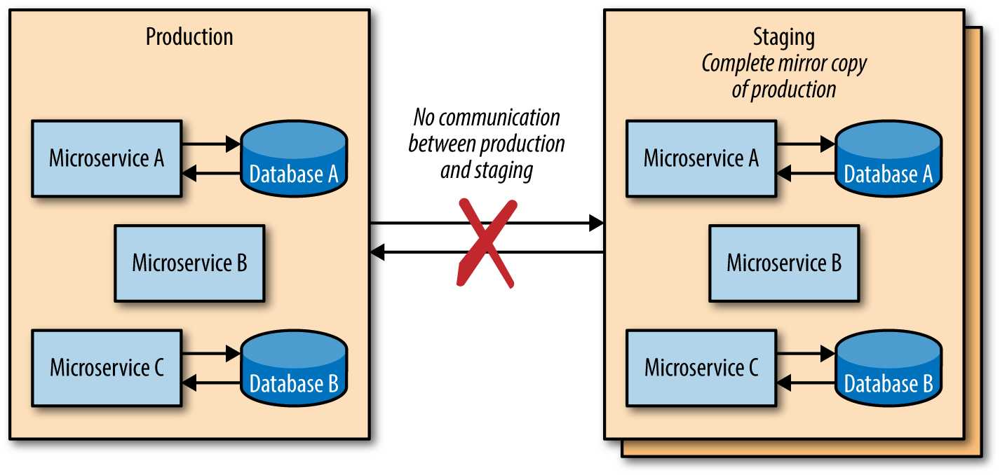

شکل 3-3. Full staging
Full staging مستلزم این است که هر microservice دارای یک محیط staging کاملاً کاربردی باشد که سایر microservicesها میتوانند با آن ارتباط برقرار کنند، زمانی که releases جدید مستقر میشوند. برقراری ارتباط با سایر microservicesها در اکوسیستم staging را میتوان یا با نوشتن تستهای خاصی که هنگام استقرار یک build جدید در محیط staging راهاندازی میشوند، یا همانطور که ذکر شد، با اجرای ترافیک production ضبط شده قدیمی یا ترافیک mock از طریق سرویس در حال استقرار همراه با تمام وابستگیهای upstream و downstream انجام داد.
Full staging همچنین مستلزم رسیدگی دقیق به دادههای تست است: محیطهای staging نباید هرگز به هیچ پایگاه داده production دسترسی نوشتن داشته باشند و اعطای دسترسی خواندن به پایگاههای داده production نیز توصیه نمیشود. از آنجایی که full staging برای یک کپی آینهای کامل از production طراحی شده است، هر محیط staging microservice باید حاوی یک پایگاه داده تست جداگانه باشد که بتواند از آن خوانده و در آن بنویسد.
هنگام پیادهسازی و استقرار محیطهای full staging باید احتیاط کرد، زیرا releases جدید سرویسها تقریباً همیشه با releasesهای جدید دیگر از هر وابستگی upstream و downstream ارتباط برقرار میکنند—این ممکن است بازتاب دقیقی از دنیای واقعی نباشد. سازمانهای مهندسی ممکن است نیاز داشته باشند که از تیمها بخواهند استقرارهایی را در staging هماهنگ و/یا برنامهریزی کنند تا از استقرار یک سرویس که محیط staging را برای همه سرویسهای مرتبط دیگر مختل میکند، جلوگیری کنند.
The Deployment Pipeline | 31